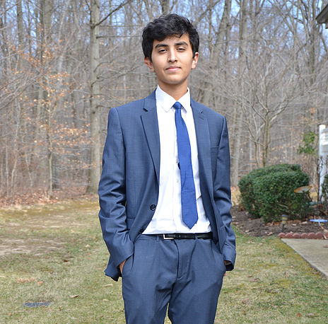

<div id="single-portfolio">
	<div id="portfolio-details" class="container">
		<a class="close-folio-item" href="#"><i class="fa fa-times"></i></a>
		<div class="row">
			<div class="col-sm-4">
					 <!-- Change Image -->
					<h4 class="team-member-name"><span class="main-color">Krishna Seshadria</h4>
					<div class="team-member-role">Secretary</div>
			</div>
			<div class="col-sm-8">
				<div class="team-details">
					<h3>About Krishna</h3>
					<p>Krishna is a senior at WWP High School North. Along with volunteering at the Plainsboro Library, he also participates in various activities in North. For example, he is the Treasurer of North's JSA chapter and a drum major for the Knights Marching Band. Through volunteering for the WWP NextGen, he hopes to help and empower kids with competencies needed for the 21st century!</p>
				</div>
				<div class="bottom-footer-center">
					<ul class="bottom-social-icons">
						<li><a href="#"><i class="fa fa-envelope"></i></a></li>
						<li><a href="#"><i class="fa fa-facebook"></i></a></li>
						<li><a href="#"><i class="fa fa-twitter"></i></a></li>
						<li><a href="#"><i class="fa fa-pinterest"></i></a></li>
						<li><a href="#"><i class="fa fa-instagram"></i></a></li>
						<li><a href="#"><i class="fa fa-flickr"></i></a></li>
					</ul>
				</div>
			</div>
		</div>
	</div>
</div>
